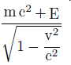
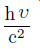

アインシュタインは相對性原理を以つて世界に名を知られているが、その原理を辨えている人は幾人あるか知り難い。古典化した物理學を刷新して、その田臭を拂拭した一人であることは異論ないのである。
直話によれば、十八歳の頃から時間空間の問題に屈託して、七年後、遂に特殊相對性原理を發表するを得た。その案出した方程式はローレンツ變換と同じであるが、これを意味づけることは頗る趣を異にしている。二三例を擧ぐれば、眞空内の光の速度は何處も同一で、限界速度とみるべきである。エーテルは無用の長物である。從來の速度の合成は改めねばならぬ。また、古典式幾何學は變更を要する。エネルギー不滅則と物質の不滅則とは不可分のものであるなどと説き、更にこれを概括した一般相對性原理に在りては宇宙觀を述べ、萬有引力論や光が引力場に於て曲げらるゝことやら、恆星の如き大なる引力場に發する力は、波長が長くなるなどを論じた。これ等は古典的の人には意外の事柄であるから、非難も誹謗もあつたが、ユダヤ系の學者はこれを支持する書を著して賞讃した。一九一四年にベルリン學士院會員、並びに大學教授に擧げられた。時に齡三十五歳に過ぎなかつた。以つてその英材なりしを知るべきである。
こゝで始めてプランクと對面し、種々の議論をしたが、プランクが申すには、時間空間の問題を解釋した相對性原理に依り、水星近日點の移動が一世紀に四十四秒にも嵩む事實は、解題せらるべきであると信ずるが、古典式の力學を適用した著名な天文學者が、數多の論文を發表しても未だ滿足な結果に到達していない。若しこれが君の主張する原理に基き、解答されねば、原理の眞僞を疑わざるを得ないとアインシュタインに詰めよつた。アインシュタインはその主張する時間空間の定理にかけ、極めて簡潔に問題を解決し、推算上四十三秒である結果を得たことを學士院に報告し、その原理の確實なるを明かにした。斯くして數十年に亙る天文學の難題は渙然氷釋して、學者も世間も相對性原理を信用するに至つた。たゞ、古典式を墨守する人はこの限りにはいらない。
目下、原子力の利用につき議論旺盛なるにあたり、最も注目すべきは、
エネルギー式（ｍは質量、ｃは眞空内の光の速度、Ｅは物體ｍが輻射により得たエネルギー、ｖは速度）である。
これに依れば、mc2 はＥの如くエネルギーである、物質不滅とエネルギー不滅とは區別できないことが明かである。普通運動には mc2 がＥに對して著しく勝つている、そのためこの式の意義が顯著に示されないが、原子となればｍは至つて微少であり、また帶電微子の一塊である。これを解剖すれば、更に微細な部分が存在し、核もまた複雜なる組織を有しているから、原子を探索し、その構造を詳論する場合には、エネルギー式のありがた味を感ずる。しかもその部分が動けば輻射を伴う、しかもエキス線やガンマ線が出るときはは相當の數になるから、量子論を舁ぎ出し、プランク恆數によりて論據を探さねばならぬ。これ等の關連を熟考すれば、アインシュタインとプランクとが啓發した量子論と相對性原理とは、相配合して原子核の機構を抉摘し、これに潜むエネルギーを民衆の福祉に供するに至るだろう。されば工學に從事する人も、これ等の理論を運用に遷さねばならぬ時節が遠からず到來するだろう。アインシュタインは一九二二年に本邦に來遊し、諸所で講演したから、その風貌が記憶に存する讀者もあるだろう。彼は丸顏でその色は少しく茶褐色を帶び、髮は縮れてやゝ黒く、體躯肥大、一見偉丈夫の觀があるけれども、純歐洲人でないことは判然している。細君は小作りで、しとやかな婦人であつた。夫の擧動につき、細心な注意を加えていた。文學を好み、巧みに英語を話した。アインシュタインは喫煙家で、パイプを滅多に手から離さなかつたが、煙草は粗末なもので、餘り身體に害を及ぼしそうにも見えなかつた。けれども細君は常にこれを心配し、明日講釋がある、落度でもあるといけないから、いゝ加減にしなさいと注意すれば、アインシュタインは頷き、弊衣の繼ぎを當てた所か、または靴の皮を綴じつくろうた處などを眺めて、にや／＼、と笑い、和氣藹々たるものがあつた。この良妻は遂に娘一人を殘して物故した。
アインシュタインは單純なるものを好み、裝飾のごて／＼したものは嫌いであつた。それゆえ、邊幅を飾らず、質素を貴び、簡潔を樂しみ、その習慣は論文にまで影響し、雄大なる結果を齎らすものでも、僅々數頁に止めたのはその特色である。相對性原理を説明した著述も全卷八十三頁に過ぎぬ。從つて難讀である。講義も難解である。尋常一樣の人には急所を捕捉することが不可能である。これがその主張する議論の傳播が遲緩であつた原因であろう。
アインシュタインは性淡泊であるから、お世辭を言うことは稀である。日本人に逢えば「私も西アジアの民族に屬しますから、あなたと同胞でありましよう」位の單純なものである。しかし、彼の民族愛は超凡である。即ちザイオニスト（Zionists）の一人であれば、政治思想に富んでいる。從つて交際も廣く、澤山の書籍も讀んでいる。藏書も宅に行けば堆くある。それが物理學や數學の書のみに限られていない。ヘブライ語で著された書册が可なりある。文學書もある。予は試みに、「文學書であなたの耽讀されるものは何ですか」と問うたところ、それは『カラマゾフの兄弟』であると答えた。これで讀者は彼の趣味が那邊にあるかを察せらるゝであろう。彼は文學以外に、音樂を樂しみ、ヴァイオリンの妙手である。或るドイツ人は批評して、彼が若し相對性で名聲を擧げなかつたならば、今頃は樂壇に喝采を［＃「喝采を」は底本では「喝釆を」］博しているだろうと語つた。英雄忙時餘閑ありとの諺に洩れず、アインシュタインはベルリンよりキール港に赴き、小さなヨットを操縱し、風の受け具合を物理的に考え、走舸術を研究して熟達した話がある。しかし、これは病氣保養の目的であつたらしい。聞くところによれば、プランク恆數ｈは相對性原理より演繹し得べしとの臆測より、この問題に熱中し、どんなに努力しても目的を達せず、遂に病魔に襲われた跡始末であつたろう。幾多の難題を解決しても、たま／＼こんな失敗に終るから、科學者は耐忍を要する。
アインシュタインの最も嫌いな事は戰である。科學者はその研究した結果を軍事に利用するを喜ぶものがある。彼等は人道を辨えざる暴漢であると罵り、嘗て平和論者の會議にその主旨を開陳した。また日本に來たとき、大學に火兵學科の設けあるを聞き、身振いして恐怖の念を暗示した。今回の世界大戰に際して、彼は兵器案出に無關心であつたか、聞かまほしき事である。
第一世界大戰後、ドイツは國状紛亂し、政爭激烈であつた。アインシュタインはその間に奔走して身に迫害を加えらるゝ危險があつた。其後、ゲルマニズムの浸潤甚しく、ユダヤ人の國外放逐論盛んに行われ、彼を憤慨せしめた。殊にナチの勢力益々熾烈となるや、身を措くに苦しんだ。已むを得ず、竊かにドイツ國を脱してアメリカに渡り、全きを得た。しかして政府はその財産を押收したが、預金僅かに二萬マルクであつたという。ユダヤ族の金劵愛から考うれば、彼はまことに清廉である。
（昭和二十三年一月 科學朝日）